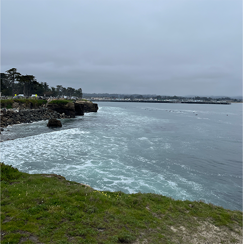
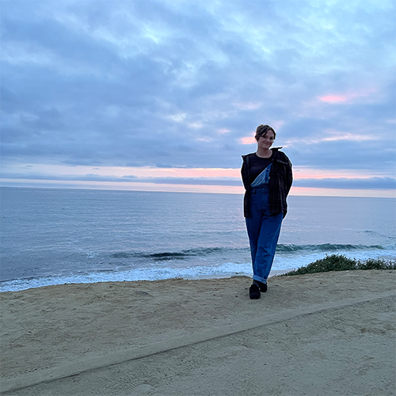
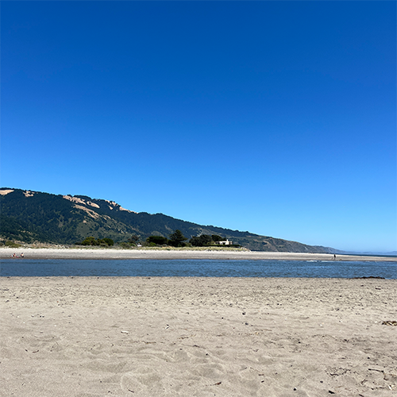
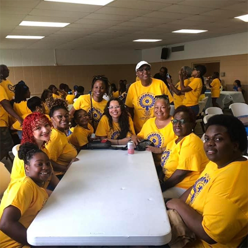
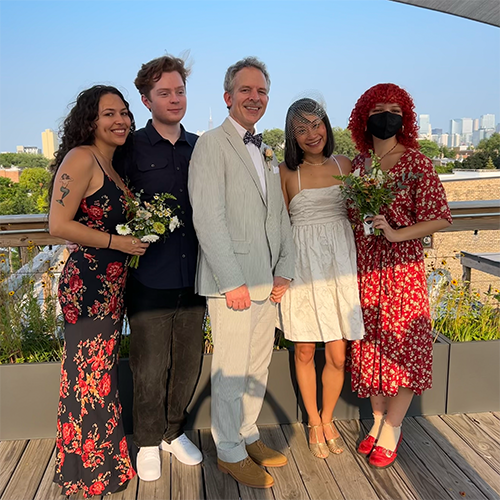
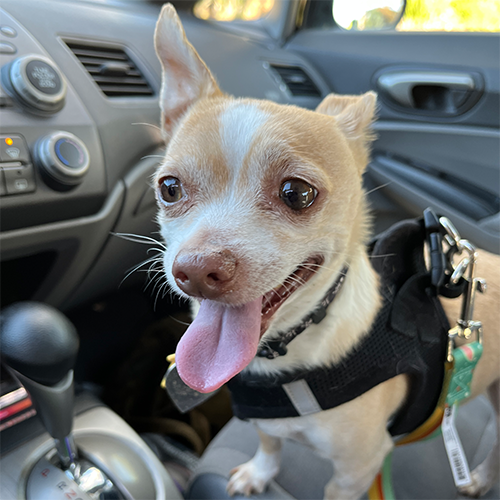
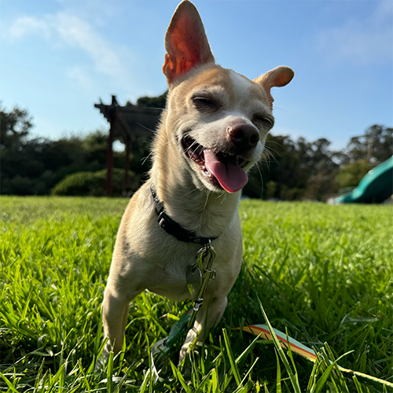
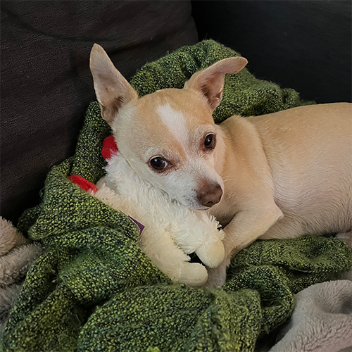
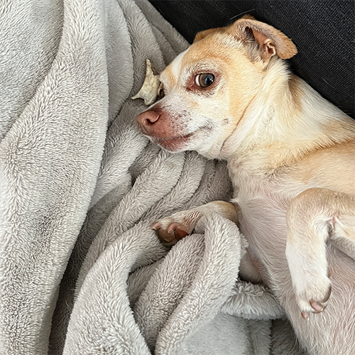
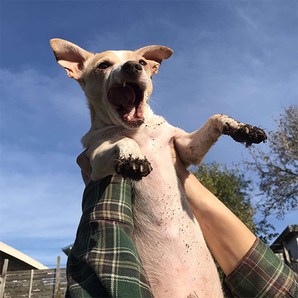

2024 Travel Diary
- Santa Cruz

My boyfriend and I spent our spring break in Santa Cruz and we had fun exploring the town and hanging out on the boardwalk.
- San Diego

Once the spring semester ended, I visited my best friend who is going to UCSD. It was my first time in San Diego so she showed me around her favorite spots.
- Bolinas

For my birthday, my boyfriend and I had a weekend getaway to Bolinas and it was very peaceful and relaxing.
- Monroe

In July, my mom, sister, and I went to Monroe, Louisiana for a family reunion. It was my first family reunion since I was 4 years old!
- Chicago

My dad moved to Chicago a couple years ago so in August I flew out there with my sister and my boyfriend to attend his wedding! It was a very small ceremony with friends and family on their roof deck and we had so much fun.
The Many Faces of Linguini and Songs To Go with Them
- 
- Passenger Princess Linguini
- 
- Blissed Out Linguini
- 
- Sleepy Angel Linguini
- 
- Side Eye Linguini
- 
- Gopher Hunter Linguini